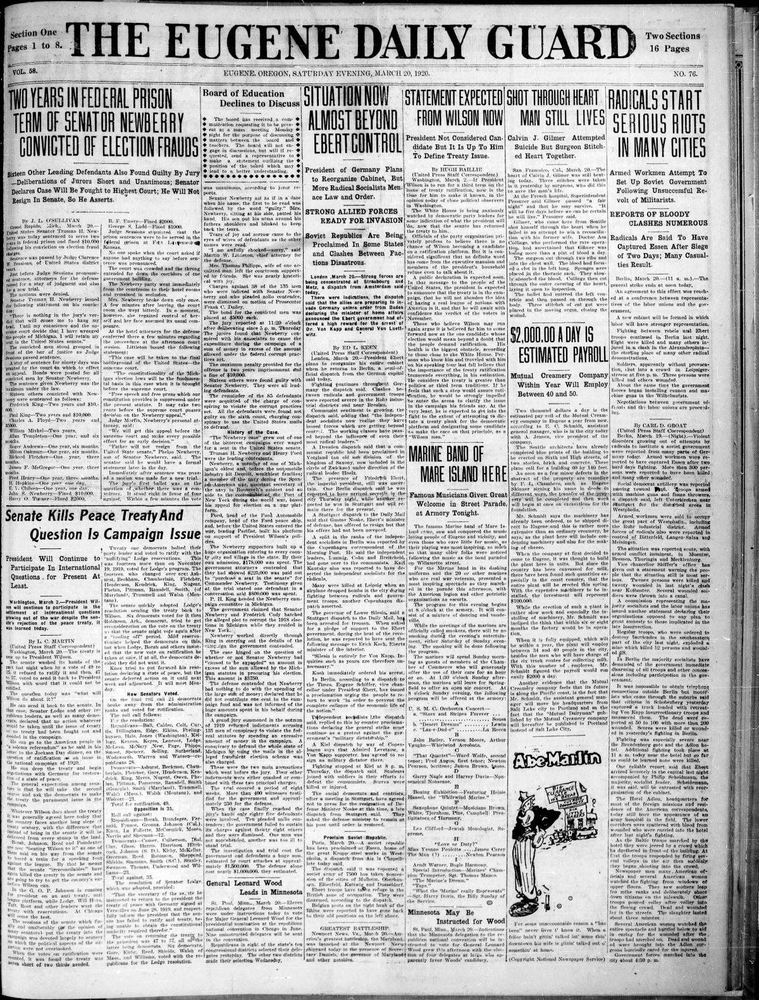
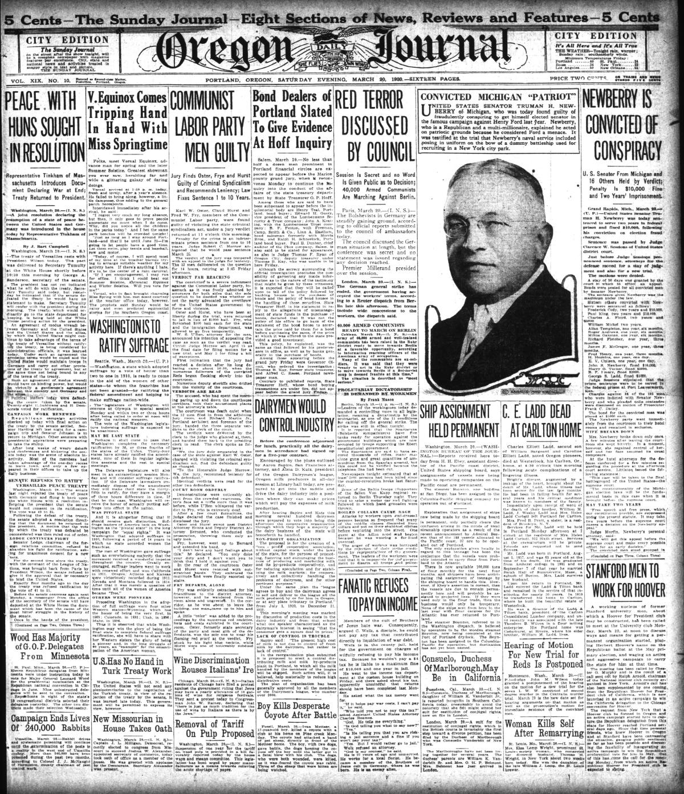
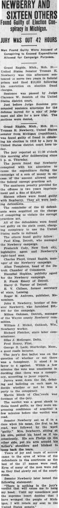
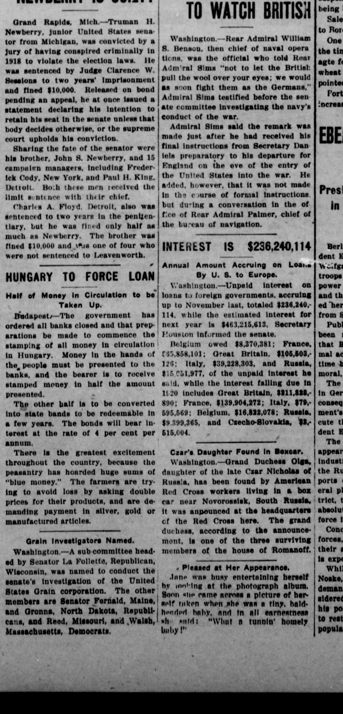

HN HN-420 · March 24, 1920 · Crime, Law & Justice > Executions, Sentencing & Wrongful Convictions > Sentencing
Source: Jasper County Democrat, p. 2 — original page; Newberry v. United States.
Report: Following a March 20 jury verdict, Newberry was sentenced to two years in federal prison and a $10,000 fine over campaign spending; his lawyers sought new proceedings. The report also described convictions of other defendants.
Assessment: The verdict and sentence occurred, but were not the final judgment. The U.S. Supreme Court overturned the federal conviction in May 1921, principally over limits on federal regulation of primary-election expenditures. This entry must always be read with HN-425.
Authentic images retrieved from Historic Oregon Newspapers (University of Oregon) and Hoosier State Chronicles (Indiana State Library). Article crops are located using the archive's own OCR word coordinates and rendered at native crop resolution; article clips are assembled from the archive's own article-block images; page scans are reduced-size access renditions. No images were generated, mocked, or retouched.




Not yet acquired. Queued for provider-specific acquisition testing (see source-acquisition manifest).
URL (preserved verbatim): https://newspapers.library.in.gov/?a=d&d=JCDC19200324.2.14
Saved research report: Historical_Newspaper_Event_Research_403-427_2026-10-23.md
Evidence note: A newspaper report means a historical publication made a claim; it does not establish that claim as fact. Contemporary reporting is separated from later scholarly context and our own assessment.